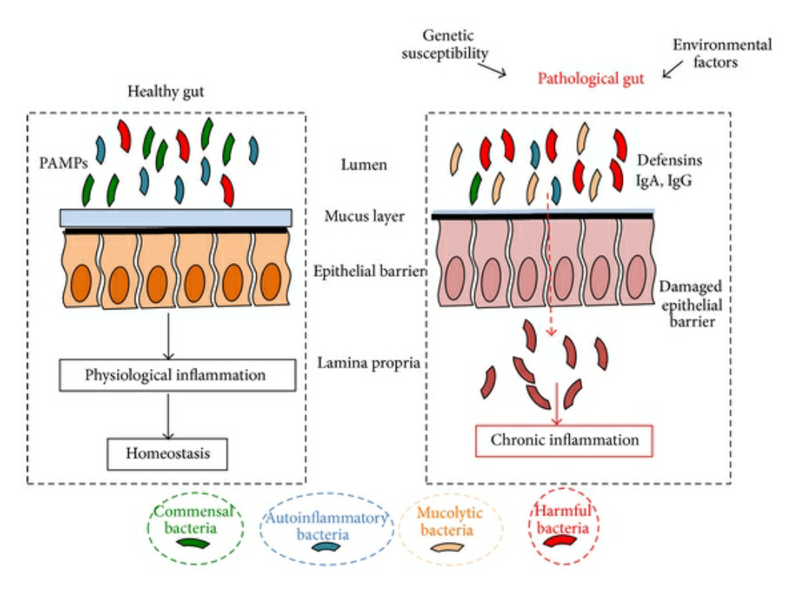

Ulcerative colitis is a disease that causes inflammation and ulcers in the lining of the larg intestine (colon). It usually affects the lower section and the rectum.

Epidemiology:
Men and women are about equally affected.
The risk of non-smokers developing UC is approximately three times higher than that of smokers.
All ages are at risk, the peak age is between 10-40 years.
Etiology:
The exact etiology of UC is unknown, but certain factor found to be associated with disease.
Rectal biopsies support the diagnosis of ulcerative colitis and used to evaluate progress, assess the response to treatment and differentiate between UC and other causes of proctitis like chron’s disease.
Video: What happens during and after a colonoscopy
2) Radiology:
Double-contrast barium enema will detect early mucosal changes &the extent of the disease.
The typical radiograph of the chronic stage of UC shows a narrowing of the lumen,more rigid walls and shortened.
3) Laboratory:
Haematological and biological values pointing to UC include iron deficiency anaemia, elevated WBCs, raised ESR.
Microbiological examination can be effective in colonic information.
How is it treated?
1- Nutritional needs:
A change in your diet may help reduce symptoms.
Keep a food diary to find out which foods make your symptoms worse.
During a flare-up, avoid or reduce these foods. But instead of cutting out a whole group of high-nutrient foods, try replacing them with healthy choices.
Follow a low residue diet to relieve abdominal pain and diarrhea.
Decrease alcohol consumption.
Try incorporating more omega – 3 fatty acid in your diet. These fats are available in fish.
Patients often find that smaller, more frequent meals are better tolerated.
Consider taking nutritional supplements if appetite is poor and solid foods are not tolerated well.
2- Aminosalicylate:
They include balsalazide, mesalazine ,olsalazine and sulfasalazine.
All of the aminosalicylate medicines contain the active ingredient called 5-aosalicylic acid (5-ASA). However:
The small differences in how these medicines are made, and how you take them, can be important because inflammatory bowel conditions can affect different parts of the gut. To treat your symptoms effectively, your doctor may prescribe a particular form of medication. For example:
If your condition affects the rectum only, you may be prescribed an aminosalicylates in form of suppository or enema.
If your gut is affected higher up, you may be prescribed an aminosalicylate tablet
Mezavant® , Dipentum® , and Colazide®s target the colon.
Asacol® , Ipocol® , Mesren® , and Salofalk® , work a little higher in the gut in the last part of the small intestine (called the ileum).
Decrease alcohol consumption.
Try incorporating more omega – 3 fatty acid in your diet. These fats are available in fish.
Patients often find that smaller, more frequent meals are better tolerated.
Pentasa® is designed to work along the entire length of the gut.
What about side-effects?
The most common side-effects are diarrhoea, headache, nausea and rash. These are generally not serious.
There are rare side-effects. For example, some people taking aminosalicylates may have a hypersensitivity reaction. This may make you feel itchy, become more sensitive to sunlight or cause skin peeling.
3- Corticosteroids:
Corticosteroids, such as prednisolone, are a more powerful type of medication used to reduce inflammation. They can be used with or instead of 5-ASAs to treat a flare-up if 5-ASAs alone aren't effective.
Like 5-ASAs, steroids can be administered orally, or through a suppository or enema.
However, unlike 5-ASAs, corticosteroids aren't used as a long-term treatment to maintain remission because they can cause potentially serious side effects, such as osteoporosis (weakening of the bones) and cataracts (cloudy patches in the lens of the eye) when used for a long time.
Corticosteroids examples
Generic Name
Brand Name
Budesonide
Entocort
Hydrocortisone
Cortef, Cortenema, Proctofoam
Prednisolone
Orapred
Some of these medicines may be taken as pills. If the disease affects only the lower part of the colon, corticosteroids can be given by enema. For disease that only affects the rectum, suppositories and topical creams can be used. In severe cases, some corticosteroids are given through a needle in a vein (IV).
Side Effects
You should Call your doctor if you have:
Hives.
Signs of an infection, such as a sore throat , fever, sneezing, or coughing.
Belly pain , nausea, or vomiting that won't go away.
Bloody or black , tarry stools.
Rapid weight gain.
Changes in your eyes, including blurred vision or eye pain.
Muscles cramps, pain, or weakness.
Changes in skin, including Acne or reddish purple lines.
Common side effects of this medicine include:
Increased appetite.
Nervousness or restlessness.
4- Biological agent
Biological agents play an important role in treatment of ulcerative colitis such as :
Infliximab:
It is a chimeric, monoclonal antibody against TNF-α, which binds to both soluble and membrane-bound forms of TNF-α . It is only available for administration as an intravenous infusion.
The efficacy of infliximab increases further when used in combination with azathioprine.
Adalimumab and golimumab:
are a fully humanized monoclonal antibodies against TNF-α which are administered subcutaneously.
Vedolizumab:
is a humanized monoclonal antibody that selectively binds to α4β7 integrin, which is located exclusively on the surface of gut-homing leukocytes. By binding to the α4β7 integrin, it selectively blocks the adhesion and trans-endothelial migration of leukocytes in the gut without interfering with lymphocyte migration in the nervous system, thereby leading to a reduction in the inflammatory response in IBD patients. It is administered intravenously.
Adverse effects:
Infections: risk of opportunistic infections and re-activation of latent infections, such as tuberculosis and hepatitis B virus.
Neoplasms: Biological agents are also associated with an increased risk of malignancies, especially lymphoma due to the inhibition of the apoptotic and tumor suppressive functions of TNF-α
5- Immunosuppressants:
These drugs also reduce inflammation, but they do so by suppressing the immune system response that starts the process of inflammation.
Azathioprine and mercaptopurine:
These are the most widely used immunosuppressants used in patients unresponsive to steroids ad amino salicylate or who relapse when steroids are withdrawn. They are used to induce and maintain remission.
Most common Side effects:
Skin rash and nausea are common.
Raised liver enzymes and allergic hepatitis are less frequent and reversible.
Cough or hoarseness.
Increased incidence of lymphoma and there is evidence of greater incidence in patients taking Azathioprine compared with 6-MP.
There are some diseases interactions like:
Bone Marrow Depression.
Infections.
Renal Dysfunction.
Liver Disease.
Cyclosporine
Effective for severe ulcerative colitis failing to responded well to other medications.
Side effects:
A tremor (an uncontrollable shaking or trembling of part of the body).
Excessive hair growth (hirsutism).
Swollen gum .
Ciclosporin can also cause more serious problems such as:
High blood pressure and reduced kidney and liver function.
Monitoring
Patients should receive frequent blood tests to monitor bone marrow and, liver function tests including plasma bilirubin and alkaline phosphatase.
Patients who take cyclosporine need to have their blood pressure and kidney function checked regularly.
Ulcerative colitis surgery
People may need surgery for ulcerative colitis in several situations, such as when
Other treatment fails to manage symptoms.
When holes form in the large intestine.
If dysplasia is found during colonoscopy or biopsy.
Video: Ulcerative Colitis Surgery - Restorative Proctocolectomy
Types of surgery
Ileoanal Anastomosis
the surgeon removes:
some or all of the large intestine (colon).
the diseased lining of the rectum.
then the end of the small intestine (the ileum) is connected to the anal canal. This allows you to have bowel movements without an ostomy.
Proctocolectomy and Ileostomy:
the large intestine and rectum are removed, leaving the lower end of the small intestine (the ileum).
the surgeon sews the anus closed and makes a small opening called a stoma in the skin of the lower belly. The ileum is connected to the stoma, creating an opening to the outside of the body.
Ileoanal anastomosis is done most often. Proctocolectomy with ileostomy is preferred for people who cannot tolerate anesthesia for a long period of time because of illness or age.
In most cases, surgery can be scheduled at your convenience. Emergency surgery usually isn't needed unless an acute attack causes toxic megacolon, severe uncontrolled bleeding, or a rupture in the intestine.
Patient care
It can be helpful to keep a food diary to keep track of what you're eating, If you discover that some foods are causing your symptoms to flare, you can try eliminating them.
Here are some suggestions:
Foods to limit or avoid:
Limit dairy products. You may be lactose intolerant — that is, your body can't digest the milk sugar (lactose) in dairy foods.
Limit fiber, if it's a problem food. high-fiber foods, such as fresh fruits and vegetables and whole grains, may make your symptoms worse.
In general, you may have more problems with foods in the cabbage family, such as broccoli and cauliflower, and nuts, seeds, corn and popcorn.
Avoid other problem foods. Spicy foods, alcohol and caffeine may make your signs and symptoms worse.
Other dietary measures
You may find you feel better eating five or six small meals a day rather than two or three larger ones.
Try to drink plenty of fluids daily. Water is best. Alcohol , beverages and carbonated drinks make it worse.

{kind=link}
{kind=link}
{kind=link}
{kind=link}
{kind=link}
{kind=link}